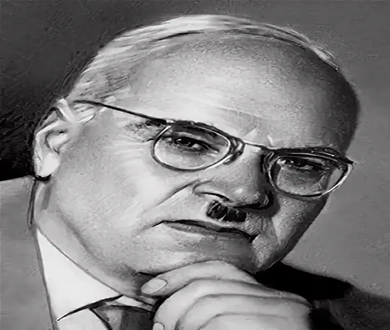

Знаменитые люди Томска
Писатели, учёные и художники, чьи жизнь и творчество связаны с городом на Томи.

Конструктор
Николай Ильич Камов
Создатель первого в мире синхронтера, уроженец Томска.
1902–1973
Николай Камов — советский авиаконструктор, пионер отечественного вертолётостроения, родившийся в Томске.
Под его руководством были созданы первые отечественные вертолёты, включая знаменитый Ка-26. Имя конструктора носит ОАО «Камов».
Томск гордится уроженцем, чьи инженерные идеи изменили мировую авиацию и вдохновляют новые поколения изобретателей.